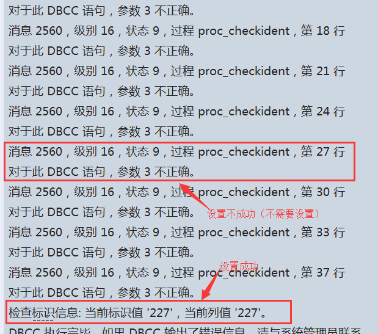

中国人寿云护士数据迁移流程说明
version 1.0
2016-06-29
文档说明
- 本文档描述了美华GDS云护士系统从MYSQL移植到SQL Server上的详细步骤
- 此文档仅供中国人寿mysql版云护士迁移至SQL Server版本使用
数据迁移流程：
- 请详细阅读流程说明，并配合对应的脚本进行操作。在执行过程中如有问题请将 问题/报错信息截屏发给美华技术人员解决，问题解决前请不要继续执行后续步骤。
- 执行迁移前务必参照 '中国人寿GDS云护士系统数据迁移环境准备.pdf' 核对脚本运行环境无误
- 数据迁移前请务必根据本文档附录A的文件清单核对迁移用文件脚本
第一步：执行建库脚本
以下脚本内容需要拷贝到 SQL Server 查询分析器中执行：
sqlserver_ccvdp_create_db.sql // 建库。如果库已存在可以忽略
sqlserver_ccvdp_create_user.sql // 创建用户及权限。如果ccvdp用户已存在可忽略
sqlserver_ccvdp_alltbs.sql // 建表
sqlserver_ccvdp_create_task.sql // 计划任务
第二步：Mysql导出数据库数据
- 拷贝
gendatasql-lnx.sh和splitsql.jar到Mysql所在服务器并修改为可执行权限，脚本运行需要jdk 1.7环境支持 - 脚本自动创建数据目标路径： /data/mysql，如果需要更换路径请修改脚本 gendatasql-lnx.sh 的work_path 变量
- 脚本中的用户帐号、口令、库名 请务必保证可用
执行脚本：gendatasql-lnx.sh
- 脚本执行完会在/data/mysql 创建若干形如 XXXX-XXX.sql 的脚本文件。
第三步：数据脚本处理
- 将上一步处理后的.sql文件拷贝到SQLServer服务器的 d:\data\msyql（或其他路径）
- 替换表达式（使用
notepad++/ultraedit/记事本等工具，注意不要改变原文件的编码）
\'替换为''
说明:转义的单引号替换为双单引号,目前只有 requestrules-00X.sql 需要此操作
第四步：导入数据
- 脚本脚本默认使用 d:/data/mysql 作为缺省数据文件路径，如果非此路径请修改import_data.bat 的 work_path 变量
注意:本脚本需要在SQL Server 本机上运行
执行脚本: import_data.bat
第五步：执行初始化脚本
需要将内容拷贝到SqlServer Management Stdio中执行
执行脚本: migration-init.sql
第六步：设置自增字段起始值
- 在SqlServer Management Stdio 中执行下面的存储过程
exec dbo.proc_checkident;
- 执行结果: 
第七步：开启SQL Server Agent 代理，启动定时任务
第八步：完成
如果执行过程中有错误发生，请截屏后发给美华的技术人员分析排错
附录A 文件清单
- gendatasql-lnx.sh
- import_data.bat
- migration-init.sql
- splitsql.jar
- sqlserver_ccvdp_create_db.sql
- sqlserver_ccvdp_create_user.sql
- sqlserver_ccvdp_alltbs.sql
- sqlserver_ccvdp_create_task.sql
- 中国人寿GDS云护士系统数据迁移环境准备.pdf
- 中国人寿云护士数据迁移流程说明.pdf